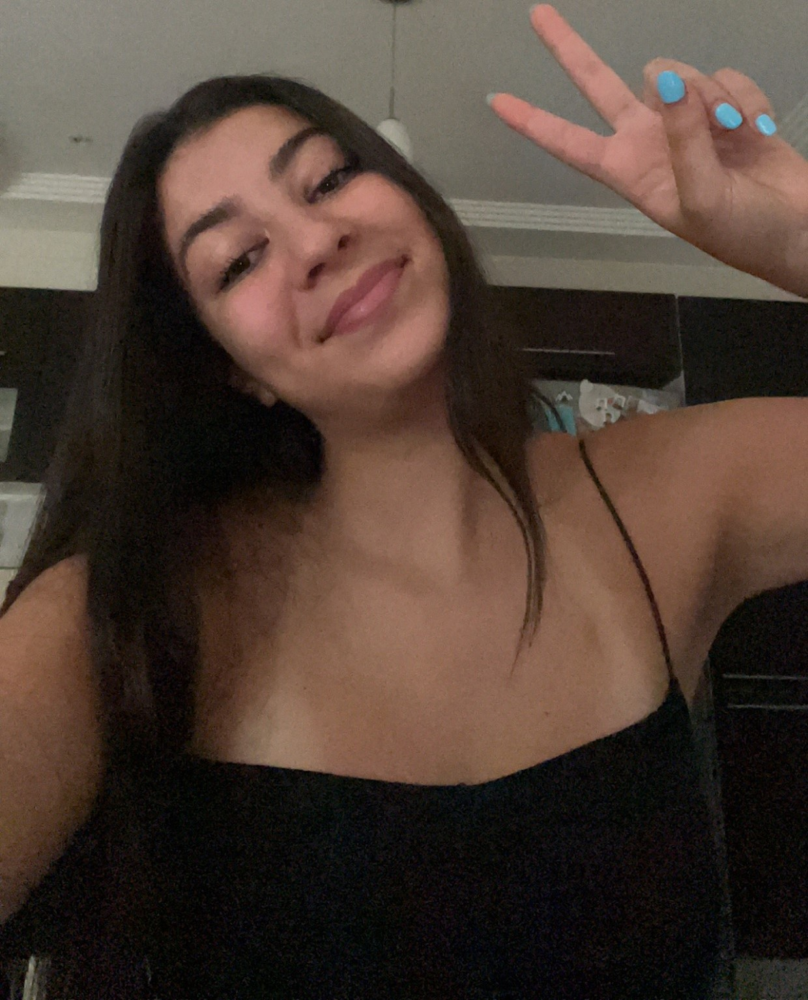

About me
Hello! I'm a student at EMLV, and I'm passionate about a few things in life. First and foremost, I absolutely love football (or soccer, as it's known in some parts of the world). It's not just a sport for me; it's a source of inspiration and joy. When I'm not watching games, you can often find me engrossed in a good book. I'm an avid reader, and there's nothing like getting lost in the pages of a captivating story. Additionally, I also enjoy spending my free time playing video games. It's a fun and immersive way to unwind and challenge myself. Overall, I'm a student who's enthusiastic about both sports and the world of imagination through literature and gaming .
Hobbies
- Reading Books:
- Playing Video Games:
- Watching Football:
Reading is my escape, my adventure, and my sanctuary. Books have the power to transport me to different worlds, introduce me to intriguing characters, and challenge my thinking. From classic literature to contemporary novels, I'm an eclectic reader. I enjoy the magic of words and the emotions they evoke. There's nothing like getting lost in the pages of a good book, and I cherish the wisdom and inspiration I find in each one.
Video games are another way for me to unwind and immerse myself in different realms. Whether it's solving complex puzzles, embarking on epic quests, or competing in online multiplayer battles, gaming offers a unique form of entertainment. It's not just about fun; it's about strategy, problem-solving, and the thrill of achieving in-game goals. Video games provide a sense of accomplishment and allow me to connect with friends and fellow gamers, making it a diverse and engaging hobby.
Watching football is my ultimate passion, and my heart belongs to the beautiful game. I find pure joy in following and supporting my favorite team, Paris Saint-Germain. From the exhilarating goals to the strategic plays on the field, I'm glued to the screen for every match. The anticipation and excitement of a PSG game day are incomparable. Cheering for my team and witnessing their victories or challenges is an experience that fills me with pride and enthusiasm. Football isn't just a sport; it's a way of life, and PSG holds a special place in my heart.